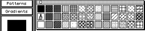
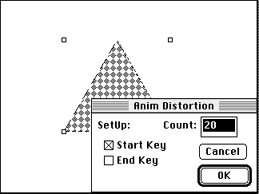
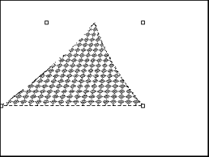
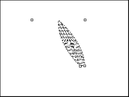

- Press Command - Clear to reset the 3DO Animator defaults.
- From the Anim menu, choose Clear >All Frames, then choose Set # Of
Frames and enter 20.
If you completed the previous exercise, the Frame Counter
automatically moves to frame 1. If you didn't do the exercise above, press
Command - 1 to go to frame 1.
- From the palette, choose the quilt pattern (column 13, row 3, see
Figure 1) as the foreground pattern.

Figure 1: Patterns palette.
- Click the Regular Polygon tool and paint a triangle with about a
two-inch base.
- Select the triangle.
The Marquee appears.
- In the Anim menu, choose Anim Selection, then choose Anim Distortion
from the submenu.
The Start Key in the dialog is checked by default. It shows that the
distortion you create will begin on frame 1 of the animation. The number
of frames in the animation is displayed in the Count box.

Figure 2: Anim Distortion dialog.
- Drag the far-left handle of the base of the triangle to the left to
make the triangle stretch (see Figure 3 below).

Figure 3: Starting point for animation using distortion.
- Click End Key and drag the same far-left handle of the triangle the
same distance to the right as you originally dragged it to the left (see
Figure 4 below). Click OK.

Figure 4: End point for animation using distortion.
3DO Animator draws the distortion, stopping on the last frame of the
animation.
- Click twice outside the distorted triangle. The first click deselects
distortion; the second click deselects the selection.
- Press Command - 1 to go to frame 1, then press Command - 4 to see the
range of the distortion. If you want, press Command - 6 (Play Ping Pong)
to get the best results from the effect.